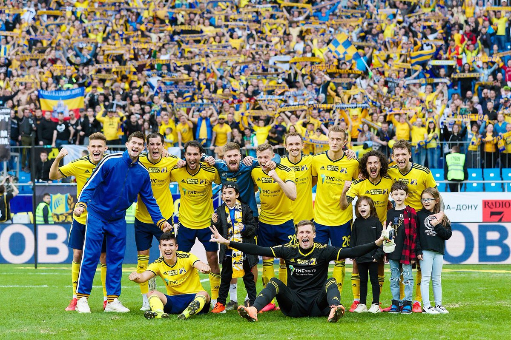

Shower Presentation Engine
Yours Truly, Famous Inc.
How do I help my Team Leaders to grow?
What if there is already a Team Leader in the team?
What if there is already a Team Leader in the team?
Be patient
Sabotage your Team Leader
Look for a new workplace
What if there is another way?
Timur Gafiulin
Frontend Developer at ecom.tech
TatarinFrontend
Member of the conferences' Program Committees
HolyJS
Yamal.dev Conf
TatarinConf
My expertise
6+ years experience in IT
Have experience training IT specialists
Have experience working as Team Leader
Have experience working as "eminence grise"
What types of teams exist?
Mature
Immature

How can a Developer influence one's Team Leader?
How can you help your TL?
Code review
Conducting interviews
Delivery
Architecture
Team development*
The intercation necessary for one's growth
Initiative
Knowledge sharing
The principle of transparency
Practical steps and development strategy for one's TL
Reverse mentoring
Collaborative problem-solving
Assistance in planning
Creating a favorable environment for Team Leader's growth & development
Initiative
Initiative
Identifying growth areas
Initiative
Identifying growth areas
Motivation support
Initiative
Identifying growth areas
Motivation support
Mental state
Initiative
Identifying growth areas
Motivation support
Mental state
Shared vision of meeting team's goals
Was this speech about being proactive?
Instead of the conclusion
Work smart, not hard
Timur Gafiulin
Thank you for your attention